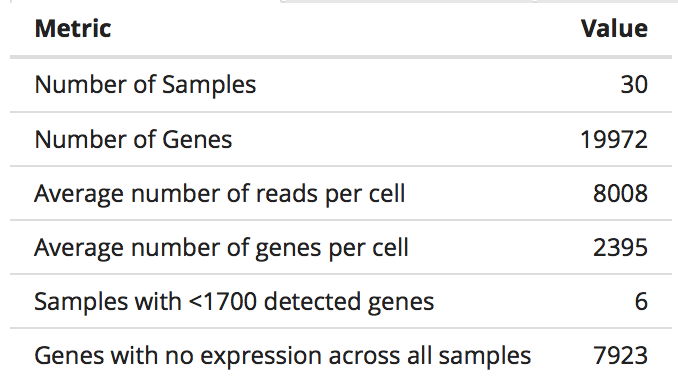
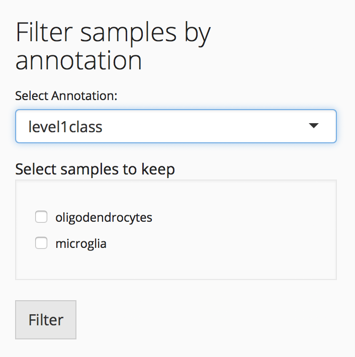
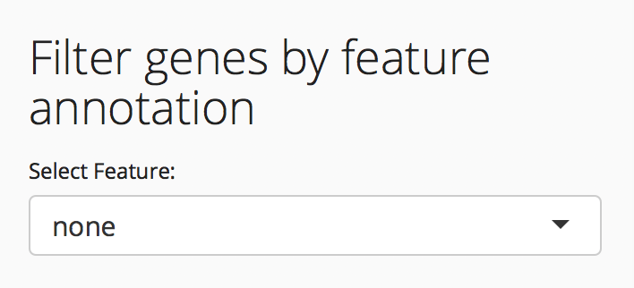
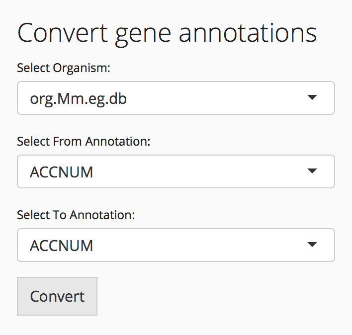

Data Summary and Filtering Tab
Single Cell Toolkit
David Jenkins
The Section of Computational Biomedicine, Boston University School of Medicine, Boston, MAdfj@bu.edu
Tyler Faits
The Section of Computational Biomedicine, Boston University School of Medicine, Boston, MAW. Evan Johnson
The Section of Computational Biomedicine, Boston University School of Medicine, Boston, MAIntroduction
The data summary and filtering tab provides several summary statistics and ways to filter your data. The summary statistics and filtering are performed on the selected assay, which can be changed using the “Select Assay” drop-down.
Data summary table

The summary table provides several summary statistics about your data including:
- The number of samples
- The number of genes
- The average number of reads per cell
- The average number of genes per cell
- Samples with fewer than the selected cutoff expressed genes
- Genes with no expression across all samples
Filtering
Several filtering options are available
Cutoffs

Data can be filtered by user selected cutoff values including:
- Remove genes with no expression across all samples. These genes are uninformative
- Minimum detected genes per sample. Samples with few expressed genes could indicate an empty well.
- Percent low gene expression. This filter will remove the genes with the least expression in the dataset
When you have set the cutoff filters to the desired level, you can filter data with the “Filter Data” button.
Delete Outliers
If there are specific cells that should be excluded from the dataset, you can select them and they will be removed when “Filter Data” is clicked.
Reset
The SCTK saves a copy of the originally uploaded data, which can be restored by clicking the “Reset” button.
Filter samples by annotation

Data stored in the annotation data frame can be used for sample filtering. Choose a column from the annotation data frame, the values from this column to keep, and click “Filter.”
Filter genes by feature annotation

Similarly, gene annotations can be used to filter genes. Select a column from the row data frame and the values to keep and click “Filter.”
Convert gene annotations

The SCTK can use annotation data from Bioconductor annotation packages such as org.Hs.eg.db to convert gene annotations between standard annotation types such as Entrez gene ids, Ensembl gene ids, or gene symbols. By default, these packages are not installed, so you will need to manually install the package for your appropriate organism. Instructions for installation can be found on the Bioconductor website
Delete an annotation column
You can remove an unnecessary or unwanted annotation column by selecting it and clicking the “Delete Column” button.

Assay Details
The assay details tab describes the available assays and reduced dimensionality data and allows the user to modify the SCTK experiment object
Annotation Data
The annotation tab displays the annotation matrix.
Convert Annotation Data Columns
For plotting, annotations that contain character values are interpreted as factors and will be displayed with discrete colors. Numeric annotations will be plotted with a continuous color bar. To change a numeric value to a factor, select the annotation column and change the “Field Type” from numeric to factor.
Session info
## R version 3.4.3 (2017-11-30)
## Platform: x86_64-apple-darwin15.6.0 (64-bit)
## Running under: macOS High Sierra 10.13.3
##
## Matrix products: default
## BLAS: /Library/Frameworks/R.framework/Versions/3.4/Resources/lib/libRblas.0.dylib
## LAPACK: /Library/Frameworks/R.framework/Versions/3.4/Resources/lib/libRlapack.dylib
##
## locale:
## [1] en_US.UTF-8/en_US.UTF-8/en_US.UTF-8/C/en_US.UTF-8/en_US.UTF-8
##
## attached base packages:
## [1] stats graphics grDevices utils datasets methods base
##
## loaded via a namespace (and not attached):
## [1] compiler_3.4.3 backports_1.1.2 magrittr_1.5 rprojroot_1.3-2
## [5] tools_3.4.3 htmltools_0.3.6 yaml_2.1.17 Rcpp_0.12.15
## [9] stringi_1.1.6 rmarkdown_1.9 knitr_1.20 stringr_1.3.0
## [13] digest_0.6.15 evaluate_0.10.1